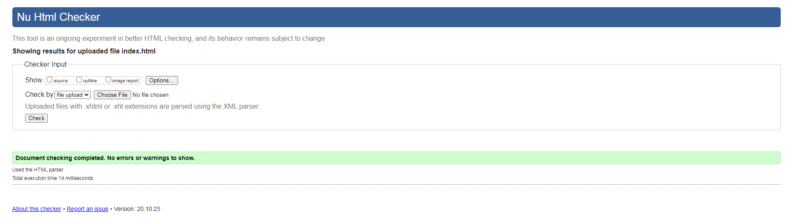

Devin Belasco-Bio
sections-Bio
Hello world, and welcome to my page. I"m a 33 year old East Providence resident, and have been one for most of my life. I am currently enrolled in Video Game Design and Development, at New England Institute of Technology. This will be my second degree from the school. Just last year I graduated with an Associates degree as a Physical Therapist Assistant, and also received 'Best of Tech' and 'Tech Scholar' upon graduating. I also graduated from MTTI's Personal Fitness Trainer program, and became certified through the American College of Sports Medicine. This was all made possible through the GI Bill I earned while serving in the United States Coast Guard. During my time serving, I was stationed in New Hampshiere and Maine. During that time, I was on a boat that traveled from Canada, down to Columbia, and everywhere inbetween. Feel free to follow me on Twitter
sections-Schooling
- East Providence Senior High School
- Wildwood Middle High School
- New England Institute of Technology
sections-Hobbies
- Working out. I used to do powerlifting and strognman type training, but that is on the back burner now. However I still enjoy lifting. Running, I dont enjoy so much, but I ran my first half marathon distance last year, and was ready to run my first race this year, but sadly Covid hit.
- Video games. I have enjoyed playing video games since I was a little kid. My uncle called me a 'Video Game Junkie'. I can see why he would. The first game I ever recall playing was an old dungeon crawling Teenage Mutant Ninja Turtle game. However the passion came once I was intoduced to Sonic The Hedgehog on Sega Genesis. Ever since then, games have been a staple of my life. My favorite genre is RPGs, including titles like FinalFantays 7, 9, and 11. Deus Ex, and Mass Effect are also some of my favorites...though not true RPGs, they are heavy on RPG elements.
- Drawing and writing. I used to draw so much when I was younger, but dont as much anymore.However I am aimming to get back into it. By the time I graduated high school, I had five strong story concepts unde rmy belt that I hope to pitch some day. One of my most proudest days was when I made zerox copies of a the first full fledge comic I ever made. I went home 22 dollars richer, after selling it for 2 dollars a piece. I also adore character design, it is my favorite. Tetsuya Nomura and Kubo Tite are my heroes when it comes to this.
- Drumming. Its a newer one, but the faster the song, the better. There is constant battle among drummers about jazz vs rock. Which is harder to play, and though I'm not expercienced enough to say just yet, I know i love the challenge of fast rock songs.
- Movies. I am a movie buff, and I absolutely miss going to the cinemas. I had two different movie subscriptions and would go once a week to find a good movie to watch. MCU movies are my personal favorite. Being a comic reader when I was younger, it was so hard to find people to talk to about my favorite characters. Nowadays, everyone and their mom knows who Thanos is. It blows my mind.
© 2017, HTML/Javascript Class 